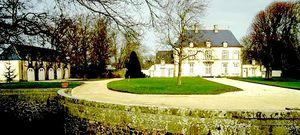
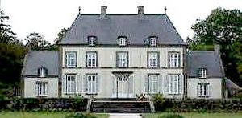
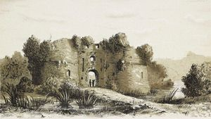

Recensement Jean-Claude Truffet
| Département | 35 — Ille-et-Vilaine |
| Canton | Saint-Malo |
| Commune | Saint-Coulomb |
| Type d'édifice | Château |
| Période d'origine | XII-XVIII- |
| Coordonnées GPS | 48° 40' 30" Nord, 1° 54' 42" Ouest Mettrie GPS : 48°40'3,25" Nord, 1° 55' 43,79" Ouest |



Deux châteaux dans cet article; Mettrie aux Houets et Plessis- Bertrand METTRIE AUX HOUETS inscription par arrêté du 29 avril 1993, La Mettrie aux Louëts est une malouinière construite dans le premier quart du XVIIIe siècle (la chapelle est datée 1725), qui possède encore un rare ensemble d'éléments, intérieurs et extérieurs, caractéristique de la demeure noble. L'entrée se fait par une grille monumentale entourée de deux sauts de loup en quart de cercle reliant la grille d´un côté à la chapelle, de l'autre au "colombier" ; des communs à arcades encadrent la cour d'honneur. Devant l'entrée, une fausse avenue accentue l'axe de la composition. La façade arrière donne sur une terrasse surélevée puis des jardins à la française avec bassin, tapis vert, miroir d'eau encadré de folies d'angle. L'intérieur a conservé son escalier à balustres de bois, des lambris d'un dessin très strict, des parquets à larges lames et quelques alcôves. Philippe Bonnet, à l'occasion de la Commission régionale du patrimoine historique, archéologique et ethnographique du 28 janvier1993, déclare : l'ensemble de la Mettrie-aux-Louëts dont la chapelle est datée de 1725, réunit tous les éléments de la demeure noble : grille, saut-de-loup, chapelle, colombier, communs à arcades encadrant la cour d'honneur et jardin avec miroir d'eau. Devant l'entrée, une fausse avenue accentue l'axe de la composition. Le saut-de-loup en demi-lune correspond à l'esthétique nouvelle de la maison des champs : il ferme l'accès, de façon surtout symbolique, en laissant dégagé l'aspect de l'architecture. Sur la façade, la travée axiale est détachée de ses voisines et contribue à recréer l'idée d'un avant-corps central.
PLESSIS BERTRAND, vestiges, Au lieu du même nom, sur un îlot rocheux, un aïeul du célèbre connétable de France, bâtit une première forteresse au XIIe siècle, abandonnée au profit d'un nouveau château-fort au Plessis Bertrand à partir de 1259. L'architecture conserve les traces de ces occupations anciennes ; de ses forteresses, mais aussi plusieurs croix de chemin datant de l'époque médiévale ou encore le moulin à eau du Lupin attesté depuis 1181. Trois tours portaient autrefois les noms de tours de l'Aigle, du capitaine et du Guesclin. Il possédait un colombier et une chapelle privée. Ce château est pris en 1387 par les partisans d'Olivier de Clisson dans sa lutte contre le duc Jean IV, et en 1589 par le duc de Mercur. Le Maréchal de Brissac l'attaque pour le roi en 1597 et en 1598 : le château capitule . Il fut démantelé sur l'ordre du roi Henri IV. Le Plessis-Bertrand avait jadis un droit de haute justice. D'abord dans l'acquisition de manoirs, leur transformation, puis l'édification de nouvelles maisons des champs appelées malouinières. C'est une des caractéristiques de son patrimoine. Ancien château fort construit par un oncle de Bertrand Du Guesclin. Neuf tours en flanquaient la courtine. Un pont-levis donnait accès à la cour en hémicycle. Trois souterrains permettaient de quitter la forteresse. Le château assurait la défense contre les attaques anglaises. Le château fut la propriété de Pierre II du Guarplic puis il passa à Pierre III, auquel il appartenait en 1364, ainsi qu'il résulte d'un acte par lequel ce dernier, fait prisonnier à la bataille d'Auray, il emprunta 1500 écus d'or à son gendre Jean de Beaumanoir, en lui donnant comme caution toutes les terres et dépendances du Plessix-Bertrand hors le châstel, le parc et le domaine. Henri IV le fit raser, comme dernier repaire des Ligueurs. inscription au M.H.par arrêté du 18 décembre 1969.
Mettrie;. Philippe Bonnet Plessis-Bertrand; du Guesclin
"
Deux châteaux dans cet article; Mettrie aux Houets et Plessis- Bertrand Plessis GPS : 48° 40' 30" Nord, 1° 54' 42" Ouest Mettrie GPS : 48°40'3,25" Nord, 1° 55' 43,79" Ouest